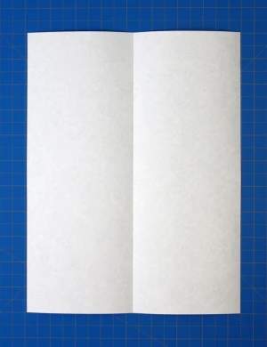

1Step 1
Crease the sheet down the middle.

Crease the sheet down the middle.

Open the sheet, then tuck both top corners into the midline.

Crease the sheet in half once more.

Finish by folding the edges down flush with the bottom of the body.
With a calm day and a level throw, expect roughly 4–5 metres (about 13–16 feet). Among the 37 distance-rated designs in this collection it ranks #37. Wind, paper weight, and small crease errors all change the result.
A well-trimmed The Basic should hold about 8–11 seconds of hang time. That places it #2 of 36 designs for time aloft. Launching from a higher spot and keeping the wings level will extend it.
It is best for long floating glides. Folding skill is beginner. Use Letter & A4, 4 steps, hands only.
Launch softly at a slight upward angle, ideally from a high point, and let the plane glide instead of forcing it.